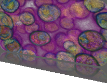

5th Symposium on Biological Data Visualization
10- 11 July // Dublin, Ireland @ ISMB/ECCB 2015
10- 11 July // Dublin, Ireland @ ISMB/ECCB 2015

Schedule
All BioVis sessions except the poster viewing will take place in Ballroom C on the 2nd Floor. Posters will be set up in the 2nd Floor Foyer. The VisWeek program contains a map of the location.
* All paper sessions start with a Primer Talk to introduce the biological background and major domain challenges that are relevant to the papers presented in that session. Primer Talks are aimed at a general audience to make the BioVis paper presentations more accessible to visualization researchers without a background in biology.
BioVis Publications
Proceedings 2011
Highlights 2011 (Open Access)
Deadlines
Paper Deadline
30 April 2012, 5 pm PDT
Poster Deadline
27 June 2012, 5 pm PDT
Contest Entry Deadline
11 July 2012, 5 pm PDT
Follow us on Twitter
BioVis 2012 is an official symposium of


BioVis 2012 is affiliated with

BioVis 2012 Gold Supporter


BioVis 2012 Bronze Supporter

BioVis 2012 Publisher Supporter